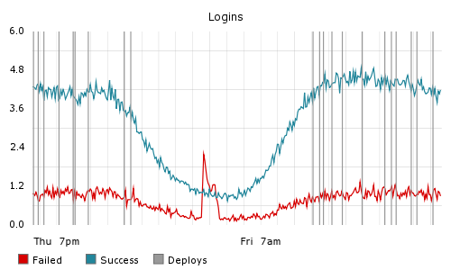

StatsD

Waarom?

StatsD
- https://github.com/etsy/statsd
- NodeJS
- Statistieken verzamelen
- UDP / TCP
- ≠ backends (Graphite, Console, MongoDB, ES, ...)
- Buckets & Values
- Counter / Timer / Gauge
Programma vanavond
- Bestaande App: pollio!
-
Statistieken toevoegen
- Backend: Elastic Search
- Frontend: Kibana